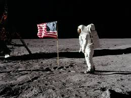
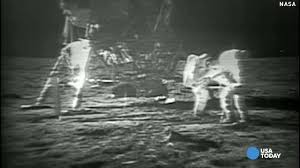
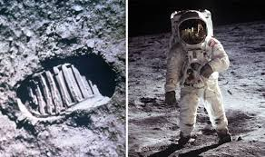
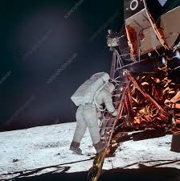

Humans view themselves as unique and special organisms whom have managed to adapt to all manner of habitats, subsistence pathways and social structures in spite of evolutionary heritage. Humans have been successful in every habitat on the planet, and this is due to technology and the adaptation to form it to the needs and desires of the human species. Author Michael Bess writes a provocative article about how human beings are already cyborgs, due to the enculturation, enskilment and adaptation of technologies of the human species (Bess 2008). The term cyborg is defined as “a person whose physiological functioning is aided by or dependent upon a mechanical or electronic device”( Dictionary.com n.d.). It is difficult to consider this melding of technology and human beings without considering what it means to be human. The fundamental human feature of humans is still argued by many people, however for this essay I would like to explore the empathy of human beings and how it applies and is enhanced by technology, ultimately making humans cyborgs, but cyborgs that can affect global sustainability.
On July 20th, 1969 history was made. This date marked the first successful manned mission to the moon, with the Eagle lunar module touching down on the moon's surface at 20:17 UTC. The following day, Neil Armstrong became the first man to walk on the surface of the moon, inspiring a whole new generation of astronauts.
As we inch ever closer to the 50th anniversary of that momentous occasion, it begs the question - why have we stopped traveling to the moon? What seemed like the beginning of a new era of exploration 49 years ago was sadly short-lived, and the last manned mission to our closest satellite was in 1972.To mark the 49th anniversary of the Apollo 11 landing, we'll be looking at the mission itself, following lunar efforts, and the reasons why we haven't been back to the moon for almost half a century.
